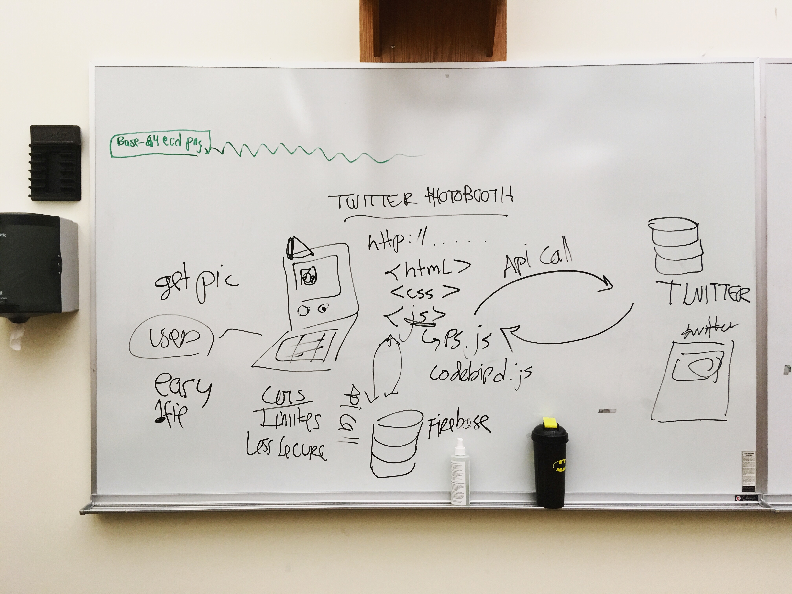
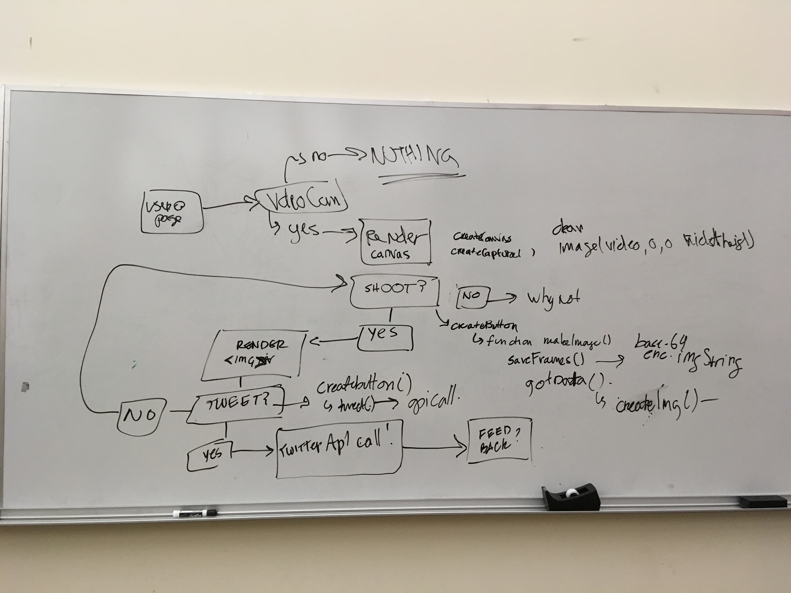

Here you will find information and steps for completing the final project.
Taken together, the steps for this project will be worth 50% of your final grade. There are four parts to this process:
- Research and Proposal // Due March 25
- Asset Preparation // Due April 3
- Drafting and Prototyping // Due April 15
- Final Project Submission and Presentation // Due week of April 22-24
ISS241 / VMS257: Final Project
For the final project you will be designing and implementing your own browser-based interface, application, game, or artwork. Your project must employ either basic javascript for user interaction, and/or a javascript library or framework, like the ones we have worked with in class. You will be graded on:
- Design: fonts, colors, layout, readability, etc.
- User Experience: clear, navigable, and functional interface elements.
- Coding Application: how you are leveraging JavaScript functionality to create an experience.
- Validation: Clean, well-structured HTML, CSS and JS, and no Console Errors.
There are almost infinite possibilities for what you could build: a painting interface with complex brushes, a music visualizer for a pre-set or user-built playlist, a series of generative digital "paintings", a face-tracking enabled photobooth, a Twitter Bot that tweets randomly generated images.
The first part of this project will require figuring out what is possible: Research.
Research and Proposal
A proposal for the final project will be due March 25, 2019. You should post your Final Project Proposal to your class website blog. The proposal should consist of a brief description of your project explaining the main concept. You should also list the libraries, frameworks, and any other resources you plan (at this point) draw on. Finally, you should start thinking about user experience and your intended audience. How do you want the user to interact with your website or interface? What kind of experience are you hoping to provide for the user: are you communicating new information? entertaining? engaging them in a game or puzzle? You may want to do some combination of these things, or something else.
For the research phase, spend some time looking at other creative coding projects. I'll provide some resources below to start with. This includes some libraries and frameworks, projects done by others, places to find example code, and tutorials.
I will also be providing feedback on your proposals, helping your narrow-down and game out your build, and providing some resources on a case-by-case basis. You should also be proactive and take initiative: google around and see what else is out there.
Resources
There are thousands of people working in creative coding. This is just a handfull of people and projects that I have stumbled upon and found interesting.
- Lauren McCarthy, Creator of p5
- Dan Shiffman
- MolleIndustria's Games
- Purin Panichphant has done some things with P5 and so much more.
- Yining Shi is a p5 contributor, artist and creative coder
- Sergio Albiac does lots of things with portraiture
- R. Luke DuBois is another digital artist.
- Allison Parrish works at NYU's ITP and Does lots of things with Text.
- Chromata generates "paintings" from uploaded photos
- This is Just a huge list of Creative Coding Resources
- And Dan Shiffman's List of Creative Coding inspiration
- Chrome Experiments is a list of inspiring browser-based projects
- Tangible JS has a huge, organized collection of js libraries
- Gibber: A JS Audio Library that works with P5
- p5.play is an addon library for making games
- ML5 is Machine Learning for JS
- CLMTRCKR face tracking
- Tracking.js is another shape/object/image tracking library for JS
- Lauren McCarthy's CLMTRCKR Tutorial
- P5 Pixel Manipulation to create an "instagram" like photo filter
- Dan Shiffman's Nature of Code Examples Ported to P5 (a great resource for generative code examples)
- The Code from the Generative Design Book is online (p5)
- These are Large Datasets of Images you Could use in your project
- Snippet: A Polygon Paintbrush in p5
- Squiffy is A Choose Your own Adventure Text Coding Framework
- the P5.js examples Page has some great snippets
- This is a set of Twitter Bots Allison Parrish wrote in Node.js and Some Dan Shiffman Wrote, too
- DariusK's Corpora (JSON Format)
- "Awesome Public Datasets" (Huge! Many formats)
- JDorfman's "Awesome JSON Datasets"
- And Yet another listing of public datasets
- Datasets to Train AI, or do other cool things with, too (Many Formats)
- Tableau is a data-viz software. This is a blog post about how to find good public datasets for it (and anything else)
- This is a set of interesting datasets built by the people at FiveThirtyEight.org
- Here's another Giant listing of public APIs. Some require Authentication, but some don't
- Need to change data formats? Convert CSV to JSON
- Mozilla Developer's Intro to Web APIs: a useful doc and good explanation of APIs on the web.
- ComputerScienceZone List of 50 Most Useful APIs for Developers
- This is a pretty easy-to-use historical events api
Asset Prep
For this part of your final project preparation, now that you are working with an idea of what you would like to make, it's time to start listing out and gathering the materials you will need:
Are you going to be working with any data, for example? Is your data online? Is it publicly available, and will it need to be cleaned? Do you have images, sounds, or other media that you will need to work with? Where are these? If you are going to be working with any supporting libraries, have you gathered these? Do you have the documentation and a working example? Are there any resources or tutorials you may need to consult? Are there other, supporting projects you are working with and want to modify?
Start gathering these materials, get them in a convenient location - like a folder where you are developing your final project, and create a working, categorized list of your files and resources. You might find it helpful to have some of these organized into sub-directories: e.g. a folder for images or sounds, a folder for JavaScript libraries, a folder for data files, etc.
For the homework, Due April 3, post a blog with this list of items, links for any supporting projects or reference materials (it can be useful to have these links easy-to-access), and a few sentences explaining their general context in your project. You should keep adding to/changing this list as your project develops. Think of this as a sort of "working bibliography," like you would have for a written project.
Drafting and Protoyping
DUE APRIL 15
For this part of the process, post a blog to the blog section of your class webpage providing a detailed draft/prototype of your final project. A draft / prototype of your project should include the following:
- A flowchart mapping the user-experience for your app
- An explanation of this flowchart
- A list of features and design goals for your app
- A brief 1-2 sentence verbal description of your app
I covered a basic example of this for my application build in class on April 3. I'll also complete an example below. For this part of the project development, you are mapping out a user experience which should help you to think about 1) what methods and functions you will want to use in your code 2) what data you will need (from an api? feedback from the user?), and how you will access and use it, and 3) the order of your code as you are building it. Your diagrams and features may change a bit as you are building your application, but this process should help you determine and set your core functionality.
Any future build you may do on an app or large computational project will include a process like this one.
In class, I covered an example with the Twitter PhotoBooth Bot I am building. This application will sit on a webpage with a p5.js canvas, access the user's webcam, "snap" images of the user using p5's saveFrames() function, and allow the user to post that image to twitter.
{kind=link}
The image at right (click to enlarge) is a schematic representation of the application showing all of the parts. The user visits the application through a web page, so this exist on an HTML page, with the layout and design being handled by CSS. The page has two buttons for 1) taking and image and 2) posting an image to Twitter. The .js file contains the code for 1) saving the frames 2) rendering the frames to the page and 3) calling the twitter api to post the image.
This image (click to enlarge) is a flowchart of the core functions of the application. 1) First the user navigates to the page in their browser, and is prompted to allow access to their video camera. If they don't allow access, nothing happens. If they do allow access, the camera image is rendered in the canvas. 2) The user then snaps a picture by hitting the "snap" button, and this prompts a function saveFrames(), 3) saving frames of the canvas to an array, and 4) rendering one of the images to the page as an img element 5) If they like the image, the user hits the "post" button to post the image to Twitter, prompting a function that makes the api call. 6) At present, on success, data about the reply is logged to the console.
{kind=link}
This should now help me organize my code and think about what features I can add to the user experience.
Core Functions:
- Display webcam image in the canvas
- Allow the user to "take a pictre" and save these to an array
- Allow the user to input text for their tweet
- Allow the user to post the image to twitter with this text
Features: (starting with those that will definitely be included, then reaches)
- Styled user interface with attractive looking buttons and "photobooth" feel
- Makes a collage of four "snapshots" by exploiting the properties of the saveFrames() method, extending the time and lowering the frame rate
- Posts the picture collage to the canvas rather than loading as a separate element (using redraw())
- Provides user feedback in the page for each step of the process (using createDiv(), createP() and remove())
- Styles the rendered image to make the photo more interesting
- Reach: Allows the user to choose between "styles" for the canvas, switching between different pixel manipulations for the rendered image
- Reach: Allows the user to "choose" which image to post by selecting the image on the page
- Reach: Stores previous images to a DB, so when page is visited, photobooth images from other users are displayed
- /OR: reach/core: loads a simple twitter stream of the account these are posted to.
You can download a .zip version of the working app on the demos section of my course website to see this code and try it out locally.
This part of the project is due April 15 as a post to your blog.